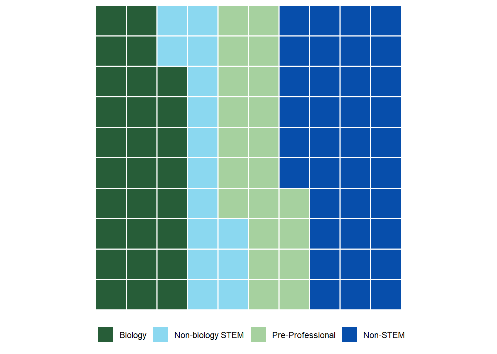
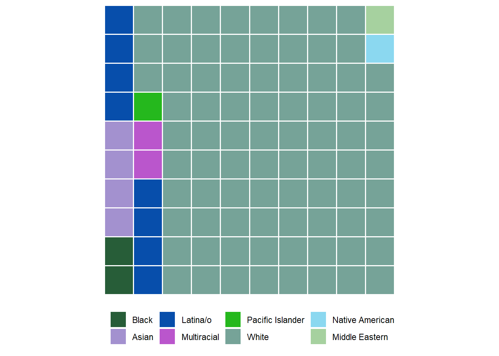
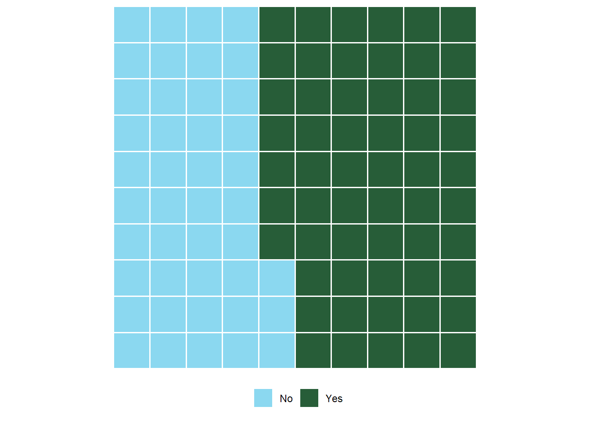

| Category | Statement |
|---|---|
| Science Identity | I see myself as a biology person. |
| Science Identity | I see myself as a science person. |
| Science Identity | I see myself as a scientist. |
| Science Identity | Other people (friends/family) see me as a science person. |
| Science Identity | My science instructors see me as a science person. |
| Career Motivation | Learning science will help me get a good job. |
| Career Motivation | Understanding science will benefit me in my career. |
| Career Motivation | Knowing science will give me a career advantage. |
| Career Motivation | I will use science problem-solving skills in my career. |
| Career Motivation | My career will involve science. |
| Instrinsic Motivation | Learning science is interesting. |
| Instrinsic Motivation | I am curious about discoveries in science. |
| Instrinsic Motivation | The science I learn is relevant to my life. |
| Instrinsic Motivation | Learning science makes my life more meaningful. |
| Instrinsic Motivation | I enjoy learning science. |
| Self-Determination | I study hard to learn science. |
| Self-Determination | I prepare well for science tests and labs. |
| Self-Determination | I put enough effort into learning science. |
| Self-Determination | I spend a lot of time learning science. |
| Self-Determination | I use strategies to learn science well. |
| Self-Efficacy | I am confident that I will do well on science labs and projects. |
| Self-Efficacy | I believe I can earn a grade of 'A' in science. |
| Self-Efficacy | I am confident I will do well on science tests. |
| Self-Efficacy | I believe I can master science knowledge and skills. |
| Grade Motivation | Scoring high on science tests and labs matters to me. |
| Grade Motivation | It is important that I get an 'A' in science. |
| Grade Motivation | I think about the grade I will get in science. |
| Grade Motivation | Getting a good science grade is important to me. |
| Grade Motivation | I like to do better than other students on science tests. |
| Value of Peer Interactions | My college science classes are more enjoyable when I work with other students. |
| Value of Peer Interactions | I understand more when my classmates participate in college classroom discussions. |
| Value of Peer Interactions | I learn best in college science classes when I work with classmates. |
| Value of Peer Interactions | The amount I understand is increased by classmates' ideas in my college science classes. |
| Value of Peer Interactions | When classmates share their ideas in college science classes, this helps me learn. |
| Sense of Belonging | When I am in a science setting, I feel a connection with the science community. |
| Sense of Belonging | When I am in a science setting, I feel respected. |
| Sense of Belonging | When I am in a science setting, I feel comfortable. |
| Sense of Belonging | When I am in a science setting, I trust my instructors to be committed to helping me learn. |
| Sense of Belonging | When I am in a science setting, I enjoy being an active participant. |
| Sense of Belonging | When I am in a science setting, I try to say as little as possible. |
| Competency in Science | I am good at solving complicated scientific problems. |
| Competency in Science | I read websites articles or books about scientific issues. |
| Competency in Science | I work on a project involving scientific concepts. |
| Competency in Science | I think about how my life is affected by science. |
| Community in Science | To what extent is serving the community important to scientific work? |
| Community in Science | To what extent is working with people important to scientific work? |
| Community in Science | To what extent is helping others important to scientific work? |
| Community in Science | To what extent is connecting with others important to scientific work? |
SABER 2023
When Students Miss class Due to a Medical Condition, Are They Engaging More with Science?
Welcome to the website for our poster! It is here we will go through some of the traditional aspects of a poster, including the “Introduction”, “Methods”, “Results”, and “Conclusion”. If you have any questions, please do not hesitate to reach out to Porter at portergbischoff@gmail.com !
Abstract
Prior research has investigated the recruitment and retention of certain student identities (such as gender and ethnicity) in STEM courses and careers. Success in STEM can be influenced by a student’s connection to the STEM community, science identity, and engagement. Despite this, no research has investigated the impact of having either a medical experience or chronic condition on STEM students despite research indicating medical students with medical conditions are less likely to complete their degree. Additionally, individuals with medical conditions tend to feel disconnected from others and experience higher levels of stress during their life. Thus, it is important to study the potential impacts of medical experiences and conditions on undergraduate students’ STEM motivation.
This study explores the potential impact of having a medical experience or chronic condition for students taking science classes at an open enrollment institution. Specifically, we hypothesized that an increase in academic interruptions due to a medical experience would result in decreased science motivation, a lower sense of belonging, self-efficacy, and self-determination. Pre- and post-course data were collected from 390 students across 14 biology courses (including non-majors) at a teaching-focused institution. Surprisingly, 57% of students surveyed reported having a medical experience and 22% reported having a chronic condition, indicating these are indeed an important and large identity to investigate further.
As predicted, students who have more medical interruptions have a significantly lower sense of belonging and self-efficacy (small effect size). Interestingly, students who indicated that they have had medical experiences and as a result, more engagement with science, have significantly higher science immersion and motivation. Therefore, medical experiences could be influencing student engagement with science in both positive and negative ways. The more interruptions to a student’s academics, the more impact it can have on their sense of belonging and self-efficacy. However, if those medical experiences result in more engagement with science, students may be more motivated to understand those experiences in the context of science. Information on the impact medical experiences can have on students is crucial to investigate as science instructors modify course content and pedagogy to be more inclusive of all identities present in the student population.
Background
Experiences in the classrooms can lead to an increase of STEM motivation. This can come through many different aspects of the classroom experience. One study explored the positive impact that performing science practices (like hypothesizing or explaining results) can increase a students’ “felt recognition” and “classroom climate”, and these two factors increases students’ STEM motivation, STEM identity, and STEM career aspirations. Another study shares that an “intervention emphasizing communal utility value of biomedical research” can greatly increase a students’ motivation for biomedical sciences. The study also compared “self-oriented” versus “other-oriented” utility values, showing that “other-oriented” unity values shows a higher student motivation.
Personal experiences can also have a large influence on one’s STEM motivation. A study explored a cohort of medical students in Norway and their motivation to go into medicine. Though this is not necessarily “STEM” motivation, the comparison of medicine to STEM fields is important to note. This study went through different life experiences that the students had and compared those back to motivation for different fields in medicine. This was done through a survey, and they asked questions like “opportunity to perform research”, opportunity to care for people”, or “interest in relations between health, well-being and society”. All of these are based on experiences that students might have had on in the past in their lives, and findings show that these experiences can have a significant impact on the paths medical doctors choose. Another study explores literature regarding Black and Latinx students’ STEM motivation. In this literature review, it is clear that the life experiences that these student have can have a significant impact on their STEM motivation, compared back to experiences of the whole student population.
Personal experiences with medicine can influence career choice. A study explores the literature out there regarding how experiences in surgery can have an impact on their career choice. Particularly, much of the literature explores the role that rotations in medical school can influence career choice. This study makes it clear that the experiences people have with medicine can significantly impact what they choose to become. Another study explores the reasons students choose to go into medicine. Many of the common answers included “intellectual curiosity, professional autonomy, altruism, and interest in human relationships”. However, in this study, it was clear that students motivated by personal illness or family member’s illness “revealed significant[ly] greater emotional exhaustion”. This makes it clear that our experiences in life can influence our decision to go into medicine.
Chronic illnesses and medical experiences can potentially lead to more interruptions. One study explores the connection between chronic illness and suicidal ideation in adults in South Korea. What they found was that people with chronic illnesses need attention given to them in order to decrease suicidal ideation. Where suicide is tied to depression, the connection between having a chronic condition and potentially missing class becomes clear, as the students could miss more class due to the increase in depression. Another study explores how having chronic illnesses increase the incidence of pneumococcal pneumonia in older adults. In particular, it goes into what specific illnesses could cause an increase in incidence of pneumonia. Comparing this back to our study, students with chronic conditions could miss more classes due to illnesses (like pneumonia). Lastly, another study shows the influence that chronic illnesses (especially diabetes and psychiatric conditions) have on a person’s self-esteem. If a student has lower self-esteem, they may feel less likely to attend class, and therefore, these chronic conditions can lead to more medical interruptions.
Motivation for the Project
Porter has had a slew of medical experiences, and these experiences led him to pursue a career path in medicine. While going through his undergraduate experience, preparing for medical school, he found a real passion for science as well as medicine. Because this was relatively late in his education, he wishes that he knew this passion he had before his undergraduate studies. Therefore, this project was born, hoping to find that Porter wasn’t uncommon in his experience and assisting other students understand their passions for science sooner than later. To learn more about how this project became to be, please go to this link!
Methods
We used an adapted survey from other literature to find information regarding STEM motivation. This survey was given pre-semester and post-semester to 14 different Biology courses at Utah Valley University. These classes had students who were both STEM majors and non-majors, as these classes were generally General Education classes. Utah Valley University is an open enrollment institution, making this data an interesting set to explore.
390 students answered the pre/post-semester surveys. We have a large number of pre-semester data, but only 390 responded to both the beginning and end of the semester survey.
Aspects of the Survey
STEM Motivation Questions
Here are the questions that we asked to determine the different aspects of STEM motivation.
Medical Interruptions
Students self-identified whether or not they had medical experiences. After they answered that, students answered how often they had missed class due to their medical experiences on a scale from 1-5, from “Never” to “Always”.
Statistical Analysis
We used Pearson Correlations to properly understand the significance data for each of the aspects. We are excited to continue doing analysis on this data set, as we know that we can dive deeper into it.
Technology
SPSS was used to complete the Pearson Correlation. R packages were used, with corrplot to create the correlation plot, waffle to create the demographic plots, and ggplot2, dplyr, and gridExtra to create the pre/post semester change plot.
Results
To see the R code for this, follow this link!
Each block represents 1%, but there are some demographics that have less than 1%. These are identified by 1 block, though they are smaller than the 1%.
Demographics
Major

The data indicates the distribution of career aspirations among the respondents. Approximately 29% of them expressed an interest in Biology, while Non-biology STEM fields accounted for around 16% of the responses. Pre-Professional aspirations represented approximately 21% of the respondents, and Non-STEM career paths comprised about 34% of the total aspirations reported.
Year in School

The data represents the distribution of students across different academic years. Among the students surveyed, 36% were Freshmen, 31% were Sophomores, 18% were Juniors, and the remaining 22% were Seniors.
Career Aspiration

Non-STEM took the largest percent of the graph with 39%. STEM professionals took nearly twenty percent (20%), which was similar to the 21% of those who wished to be health care professionals. Those who wish to be a dentist or a doctor took a combined 20% (with those who wish to be dentists taking 7% and those who wished to be doctors taking 13%).
Ethnicity

The data illustrates the racial and ethnic distribution of the surveyed individuals. Among the respondents, 1.6% identified as Black, 0.6% as Native American, 0.2% as Middle Eastern, 3.8% as Asian, 6.4% as Latina/o, 1.6% as Multiracial, 1% as Pacific Islander, and the majority, 78.7%, identified as White.
Gender

The data represents the gender distribution of the respondents. Among those surveyed, 50.8% identified as Men, 0.5% as Transgender, 46% as Women, and 1.3% as Fluid / Gender Non-Conforming.
Religious?

The data indicates the distribution of respondents based on their religious affiliations. Among those surveyed, approximately 27% identified as Non-Religious, while around 73% identified as Religious.
First Generation Student?

The data represents the distribution of students based on their generational status. Among those surveyed, approximately 76% identified as Continuing Generation Students (at least one parent attended college), while around 24% identified as First Generation Students (no parents attended college).
Medical Experience?

The data illustrates the percentage of those who identified to have had a medical experience. Among those surveyed, approximately 44% answered “No” while around 56% answered “Yes”.
Chronic Condition?

Of those who identified as had a medical experience, approximately 60% answered “No” while around 40% answered “Yes” to whether they have a chronic condition.
Correlations

The graph uses a gradient system done by color to represent the strength and direction of correlations, with darker colors indicating stronger positive or negative correlations and lighter colors representing weaker correlations. This is done over 10 categories that are compared on a scale from -1 to 1.
Pre & Post Semester Analysis
The graph visually presents the pre- and post-semester changes for different pairs of variables, highlighting significant differences between the two time points for each pair. Bars showing the deviation between each group with black dots indicate significance. Science identity had overall the most variance in mean over the course of the semester. While science carrier motivation had the largest single mean change. Science interest had a similar large change in one area like science career motivation did. Self determination was an outlier that had less variance overall. Self-efficacy and community in science changed similar but in difference sections with different means.
Conclusion
In conclusion, this study sheds light on the potential impact of medical experiences and chronic conditions on students taking science classes at an open enrollment institution. The findings indicate that a considerable number of students, around 57%, reported having a medical experience, while 22% reported having a chronic condition. These numbers highlight the significance of investigating the influence of medical identities on students’ experiences further. The study’s main hypotheses were supported, revealing that an increase in academic interruptions due to medical experiences led to decreased science motivation, as well as lower senses of belonging, self-efficacy, and self-determination.
Negative Effects
It was particularly interesting to observe that students who had more medical interruptions experienced a notable decrease in their sense of belonging and self-efficacy, emphasizing the potential challenges that medical experiences can pose to academic engagement and self-confidence. This insight is crucial for educators and institutions to recognize and address, as it may have profound implications for students’ overall success and well-being in science courses.
Positive Effects
However, a noteworthy and encouraging finding was that some students who had experienced medical experiences displayed higher levels of science immersion and motivation. This suggests that medical experiences can also positively influence student engagement with science, potentially prompting students to explore these experiences further within the context of scientific understanding. These positive associations between medical experiences and science motivation are promising, as they may indicate pathways for fostering increased interest and participation in scientific disciplines among affected students.
Importance
In light of these results, it becomes evident that acknowledging and accommodating medical identities and experiences in science education is paramount. By recognizing the potential challenges students face due to medical interruptions and offering support and inclusive teaching strategies, educators can help mitigate the negative effects on students’ sense of belonging and self-efficacy. Moreover, incorporating medical experiences into the curriculum could harness the positive influence they have on science motivation, thereby fostering a more engaging and supportive learning environment for all students.
Next Steps
Moving forward, science instructors and institutions should consider the implications of this study as they modify course content and pedagogy to be more inclusive and supportive of students with medical experiences and chronic conditions. Emphasizing a student-centered approach and providing appropriate resources can help create a conducive learning environment where all identities, including those shaped by medical experiences, are embraced and empowered. By doing so, science education can evolve to be more inclusive, enriching the educational journey of all students and ultimately contributing to a more diverse and innovative scientific community.